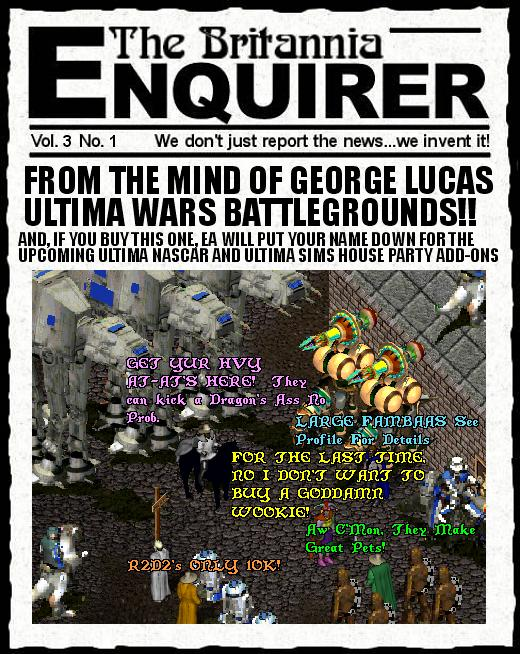

"MESA THINKIN' EA NOSA QUITE GETTIN' IT!" - Jar Jar Binks
Now I don't want to get off on a rant here...
Like hell I don't. As you may have judged by the picture and headline from this edition of the Enquirer, I definitely am less than impressed with EA's handling of this latest "upgrade" to UO, namely Lord Blackthorne's Revenge. I mean, with all due respect to 'the Mind' of Todd McFarlane who is a fine Sci-Fi artist, blah blah blah ... what genius came up with the brilliant idea that the Ultima Online series would be incomplete without a Half-Man, Half-Robot Lord Blackthorne??? Jesus H. Christ! I mean it is bad enough that Electronic Arts packages up the last fifty patches and a bit of new artwork into a box with a dumbass plastic action figure and trys to foist what should be a free upgrade on all the existing UO players for the price of a new game! Considering that all LBR mainly consists of is about 30 new monsters, that works out to about a buck a monster. I mean, you do the math. (250,000 accounts times $10 bucks a month) You mean to tell me that 2.5 million bucks a month coming in isn't sufficient to take care of keeping the product fresh with new ideas and artwork?
I have been playing UO since very shortly after its release over four years ago and in that time I have seen the game patched, punched, poked at, prodded and basically farted around with, mostly without any true vision or purpose, but rather as a knee jerk reaction every time one group or another was upset with some feature. Archers too powerful, nerf archers. Mages too powerful, nerf mages. Halberds too powerful, nerf halberds. Add features nobody asked for. Ignore features people do ask for. Add features people did ask for but do it in a way that is sure to piss off another group. GMS too busy?... add Counsellors but don't give them enough power to do anything then later fire them all anyway. People ask for Necromancy, ignore them, what they really want is a 3D interface, Right? Wrong...
Now don't get me wrong. I am not saying that NONE of the changes have been good for UO. Many have. Secure containers in houses, vendors, new craftables, new housing styles, the new lands and creatures of the Second Age, etc. all added to the quality of the UO experience. But lately I am finding less and less reason to keep shelling out 9.95 a month (Times two accounts). The latest changes (the 3D interface, LBR, etc.) have not added to the game but rather just served to draw attention away from the fact that EA is ignoring things that people have wanted in the game for years (Necromancy to name one, new areas to alleviate the shortage of land for housing to name another), and instead plunged ahead on what they see is the course to maximum profits, i.e. charging for upgrades that should be free, adding plastic crap action figures to appeal to god-only-knows what market segment, straying from the medieval role-playing roots of the game into some robotic transformers fantasy nobody asked for, etc.
The point I am getting at is, that I for one won't be buying UO LBR. Come to think of it, I have UO Third Dawn but never use the 3D interface either. I went to Ilshenar once saw about two people the whole time I was there and came back to Trammel. Maybe it is time for me to hang up Ima's War Axe and go gently into that long good night, so to speak. For me the deterioration of UO began with the division into Trammel and Felucca. I figure right there Ultima made a serious mistake by not making the existing lands (Felucca) the No-PK zone. Instead, by making Trammel the PK free area they forced thousands of people to pack up and move, destroying communities, player run towns and establishments and splintering the online lives of so many of their longest surviving players. And for what? Have you been to Felucca lately? The place is a ghost town. Go to the Brit Bank, or any bank for that matter. Head to the dungeons... deserted. Apart from the few who participate in faction wars nobody goes there except to refresh their houses or to stock up on regs. Nearly all of the player run towns and establishments that were there have closed down and many never re-opened in Trammel, meaning that the life they added to Britannia is gone with them.
If UO is to survive the onslaught of the many new MMORPGS (Anarchy Online, Dark Age of Camelot, EQ, AC, World War II Online, Worlf of WarCraft, Sims Online, Star Wars Galaxies, Shadowbane and others) arriving almost daily, then they will have to stop just plunging ahead with every cockamamie scheme some idiot in Marketing thinks will triple sales and instead start listening to the subscribers.
The last point I would like to make is that Ultima was, is, and always will be the brainchild of one man - Richard Garriott aka Lord British. It was he who created the entire Ultima Series and pioneered the first (successful) Massively Multiplayer Online RPG (before you start shouting Diablo, Diablo, it was online but only four people at once per game). Now I realize he has left UO behind and gone on to other things and I am not saying that this means UO should just lie down and die. What I am saying is that whoever takes over the task of steering UO should at least maybe check out what Ultima was all about before they start looking around for 'star power' to save the game. Just 'cause Todd McFarlane or American McGee or Rick Goodman or Roberta Williams etc. are considered some kind of 'game gods' doesn't mean they necessarily have a clue about Lord British's vision for Ultima. Nor should a marketing department be the guiding force in a game like UO. I get this shudder when I close my eyes and envision a bunch of bean counters at EA sitting around going 'How are we going to get new people to buy Ultima Online?" and one shouts out: "I know, How Bout Return to Castle Britishstein! It could have NAZIS!!!" and the rest of the people at the table jump up and shout "Ooooooh, Yeah, NAZIS! I LIKE IT!"
Anyway, I guess the question for me is: How is this going to affect ImaNewbie? Well for starters I have begun work on what will probably be the last ImaNewbie 'toon for the forseeable future. It is a long and complicated one and will probably run over several weeks. It is mainly in answer to so many of my loyal fans who have been emailing saying: "When are you going to get back to the on-again, off-again romance between ImaNewbie and IrmaDufus. Once that is done then I probably will get rid of one of my accounts for sure and just keep one running for a bit on the off-chance that something wonderful happens to restore the FUN (notice you very seldom see that word mentioned when speaking about UO anymore) that I used to experience in-game.
As far as the stuff expressed in this rant goes: "It's just my opinion ... I could be wrong"
Thanks for bearing with me while I get rid of these thoughts about UO. Stay 'tooned for the final episodes of ImaNewbie. I will be announcing them on the boards.
later...
Tryon